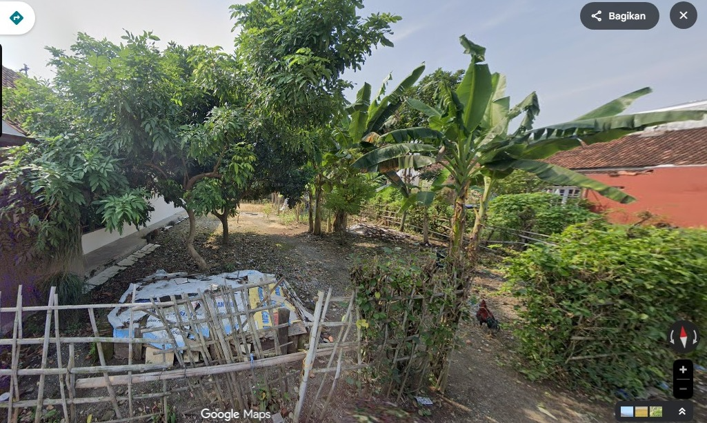
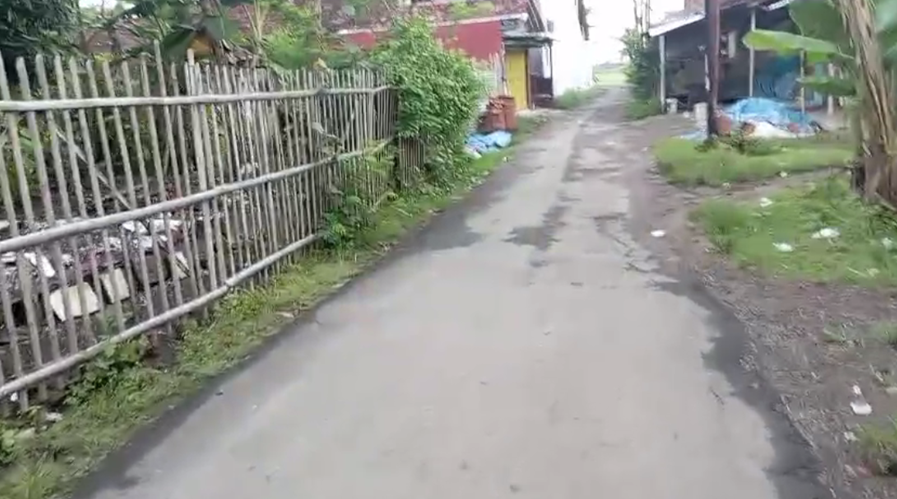
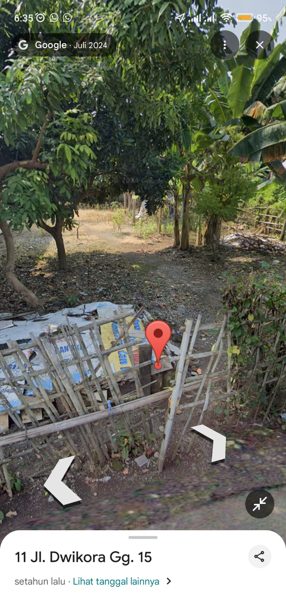
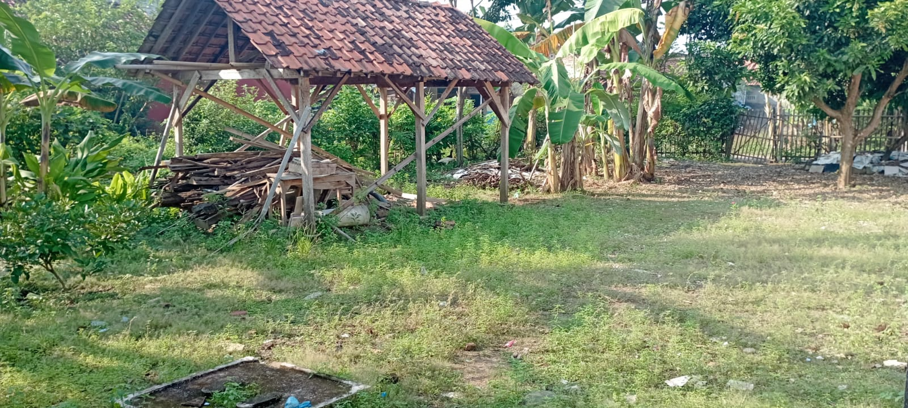
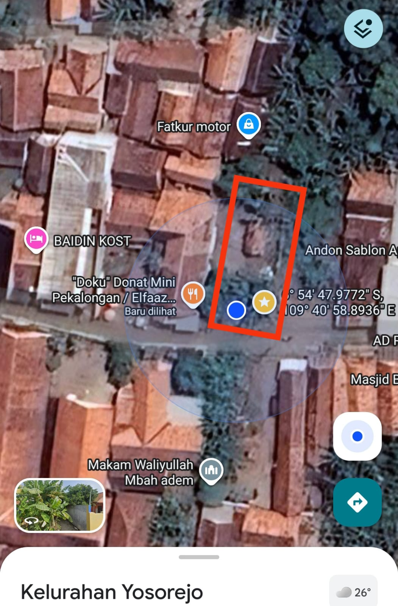

"Investasi Cerdas untuk Masa Depan & Hunian Asri"





- ✅ Dekat Exit Tol & Interchange
- ✅ Lokasi Bebas Banjir
- ✅ Dekat Masjid, Sekolah & Pasar
- ✅ Udara Segar & Lingkungan Nyaman
- 📐 Luas: 250 m² (Dimensi 10 x 25)
- 📄 Legalitas: SHM Ready (Aman)
Harga Penawaran:
Rp 1,9 Juta / m²
(Nego langsung pemilik)
Lokasi sangat strategis dengan akses mudah. Pilihan tepat bagi Anda yang ingin membangun rumah impian, villa kebun produktif, atau sekadar mengamankan aset properti yang nilainya terus naik.
📲 Hubungi via WhatsApp
Respon Cepat • Bisa Jadwal Survey Kapan Saja